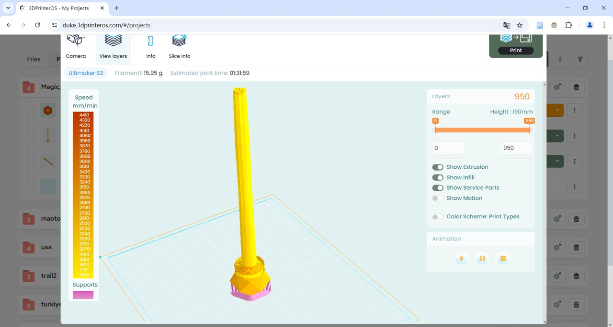
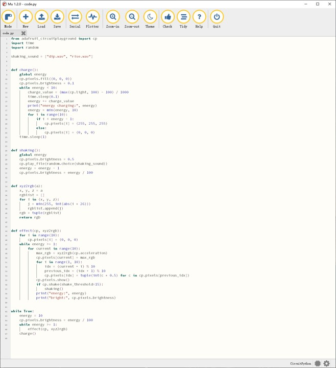

Project | 2024
魔杖原型
Magic Wand Prototype
一个围绕魔杖道具展开的原型实验，涵盖造型、3D 打印、充电结构和电子实现的记录。
A prototype study built around a magic wand prop, covering form development, 3D printing, charging structure, and electronic implementation.
Overview | 项目简介
从目录中的图像命名可以看出，这个项目并不只是概念渲染，而是一个更接近实物原型的制作过程。除了多张成品和过程照片外，还保留了 Magic_Wand.fbx 模型文件，说明该项目同时涉及数字建模与实体输出。
The filenames in this folder suggest that the project goes beyond concept renders and moves toward a physical prototype. In addition to multiple product and process photos, it also includes a Magic_Wand.fbx model file, indicating a workflow that connects digital modeling with physical output.
Process | 过程
3dprinting、charging、code 这些图像名称展示了一个清晰的原型路径：先建立可制造的几何与外观，再处理供电和交互逻辑，最后以照片记录组装和测试状态。这类记录能够有效说明作品既有视觉设计，也有工程层面的实现。
The filenames 3dprinting, charging, and code reveal a clear prototyping path: build manufacturable geometry and form, address power and interaction logic, and then document assembly and testing through photography. This kind of archive is useful because it shows the project as both a visual object and an engineered artifact.
Media | 图像与成果



